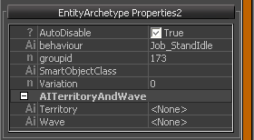
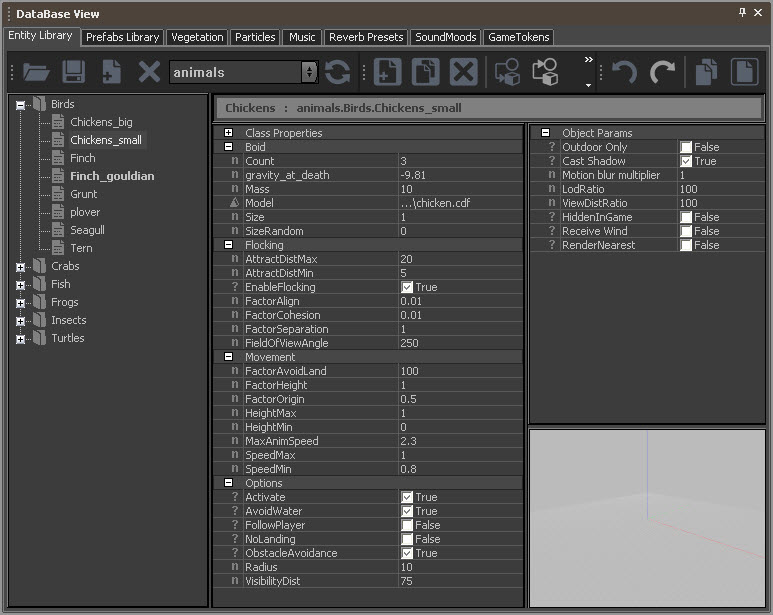
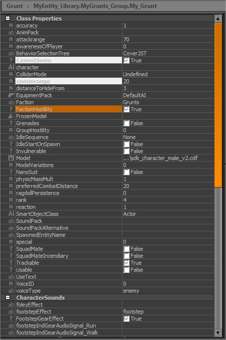
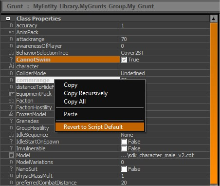
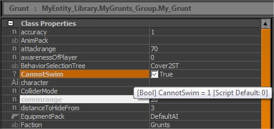
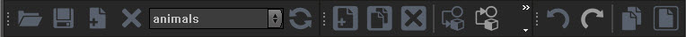

Обзор
Темы
Сущность-архетип основана на обычной сущности и определяет индивидуальные значения параметров для этой сущности. Если значение параметра Архетипа изменено, все экземпляры этого Архетипа в сцене будут обновлены автоматически.
Сущности архетипов организованы в библиотеки, которые можно создавать в Вид DataBase.
Таким образом, дизайнеры технических уровней могут заранее определить варианты классов Entity как архетипы Entity, которые можно использовать на протяжении всей игры. Для глобальных изменений, затрагивающих все экземпляры, достаточно один раз изменить объект Archetype в представлении базы данных.
Размещение архетипических объектов
Доступ к архетипическим сущностям можно получить, используя Создать объект → Архетип сущности или, альтернативно, их можно перетащить непосредственно из представления DataBase.
В окне браузера отображаются все библиотеки архетипов сущностей, загруженные в данный момент для уровня.
Перемещайтесь по этим библиотекам, щелкнув один раз. Перетащите отдельные сущности-архетипы на уровень, чтобы разместить их.
Фильтр браузера сущностей архетипа
Этот фильтр определяет строку поиска для загруженной в данный момент библиотеки архетипов. Все библиотеки, содержащие сущности архетипа, соответствующие строке поиска, будут показаны при нажатии кнопки «Обновить». Кроме того, кнопку «Обновить» можно использовать для обновления любых недавно измененных файлов библиотеки архетипов.
Свойства объекта сущности архетипа
После того, как вы разместили архетипическую сущность на уровне, выберите ее, чтобы просмотреть ее свойства.
EntityArchetype Параметры
EntityArchetype Параметры — это базовый набор параметров, общий для всех архетипических объектов.
Параметр | Описание |
|---|---|
Только на открытом воздухе | Если этот параметр установлен, объект не будет отображаться, находясь внутри зоны обзора. |
Отбрасывать тень | Если установлено, объект будет отбрасывать тень. |
LodRatio | Определяет, насколько далеко от текущего положения камеры используются различные модели уровня детализации объекта. |
ViewDistRatio | Определяет, насколько далеко от текущего положения камеры можно увидеть объект. |
HiddenInGame | Если этот объект установлен, он не отображается в чистом игровом режиме. |
Получить ветер | Если этот объект установлен, на него будет влиять любая настройка ветра на уровне. |
RenderNearest | |
NoStaticDecals | |
Создано через пул |
EntityArchetype Свойства2
Ниже приведен пример диалогового окна EntityArchetype Properties2. Это диалоговое окно содержит набор свойств типа сущности, что позволяет редактировать сущности архетипа в каждом конкретном случае.
В приведенном ниже примере показан набор свойств2 для сущности AI:

Создание библиотек архетипов сущностей
Библиотеки архетипов сущностей можно создавать и настраивать в Вид DataBase.

Разница между настройками архетипа и настройками скрипта по умолчанию
Каждое выделенное свойство в представлении базы данных фактически имеет значение, отличное от значения по умолчанию в скрипте.

Вернуться к настройкам сценария по умолчанию
Чтобы вернуть настройку архетипа обратно к фактическому значению сценария по умолчанию, вы можете щелкнуть правой кнопкой мыши по свойству и выбрать Вернуться к настройкам сценария по умолчанию.

Проверка значения сценария по умолчанию
Можно проверить значение по умолчанию в скрипте объектов, наведя курсор на свойство.

Панель инструментов

Действие | Описание |
|---|---|
Загрузить библиотеку | Позволяет загружать файл библиотеки XML; путь по умолчанию |
Сохранить измененную библиотеку | Сохраняет библиотеку архетипов; при сохранении уровня библиотека архетипов также будет автоматически сохранена. |
Добавить библиотеку | Создает новую библиотеку. |
Удалить библиотеку | Удаляет выбранную в данный момент библиотеку с уровня; вам необходимо вручную удалить его с жесткого диска, если вы хотите удалить его навсегда. |
Раскрывающийся список библиотеки | Позволяет получить доступ ко всем загруженным библиотекам на уровне. |
Обновить библиотеку | Отменяет все изменения, внесенные в библиотеку, и перезагружает библиотеку из HDD. |
Панель инструментов элемента
Действие | Описание |
|---|---|
Добавить новый элемент | Создает новый объект архетипа на основе выбираемого сценария класса сущности; вам необходимо определить группу (папку) и имя. |
Клонировать элемент библиотеки | Дублирует выбранный объект Архетипа; использует то же имя и добавляет к нему номер. |
Удалить элемент | Удаляет выбранный объект архетипа. |
Присвоить элемент выбранным объектам | Назначает выбранную сущность архетипа выбранной в данный момент сущности архетипа в представлении «Перспектива». |
Перезагрузить предмет | Сбрасывает объекты архетипа сцены этого типа. |
Получить материал из выделения | Назначает материал из текущего выбранного элемента. |
Стандартная панель инструментов
Действие | Описание |
|---|---|
Отменить | Отменяет последнее действие - установите число в Инструменты > Настройки. |
Повторить | Повторяет последнее действие - устанавливает номер в Инструменты > Настройки. |
Копировать элемент | Копирует сценарий XML текущего элемента в буфер обмена. |
Вставить элемент | Вставляет элемент из буфера обмена. |
Список библиотек
Список библиотек упорядочивает все объекты архетипов выбранной в данный момент библиотеки по группам; просматривать группы аналогично тому, как это делается в стандартном проводнике Windows.
Окно свойств класса
В окне «Свойства класса» отображаются все значения, определенные в сценариях сущностей.
Эти скрипты создаются программистами.
Параметры объектов
Окно содержит общие параметры объекта, которые существуют во всех сущностях Архетипа. Они независимы от отдельных скриптов сущностей.
Предварительный просмотр модели
Эта опция показывает выбранный объект архетипа в специальном перспективном окне предварительного просмотра модели.
Управление мышью | Функция |
|---|---|
Нажмите | Поворачивает вид. |
Щелкните правой кнопкой мыши | Увеличивает вид. |